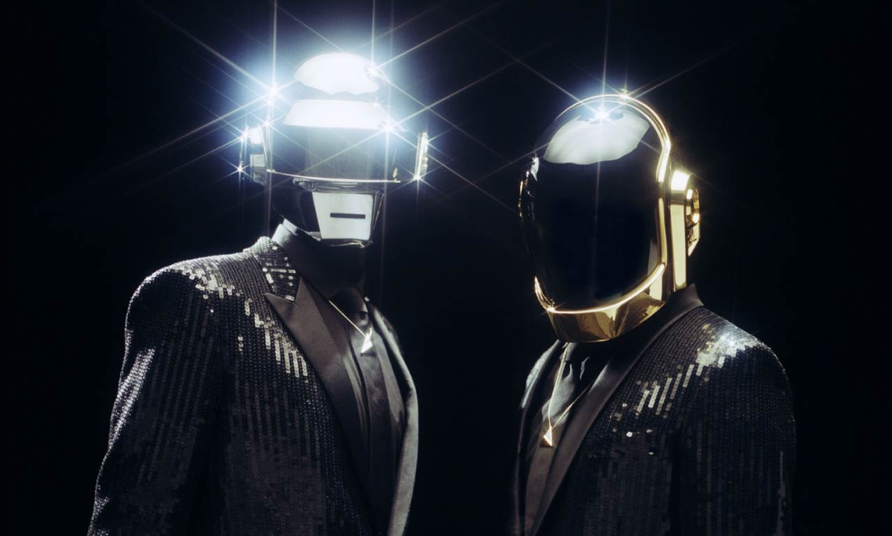
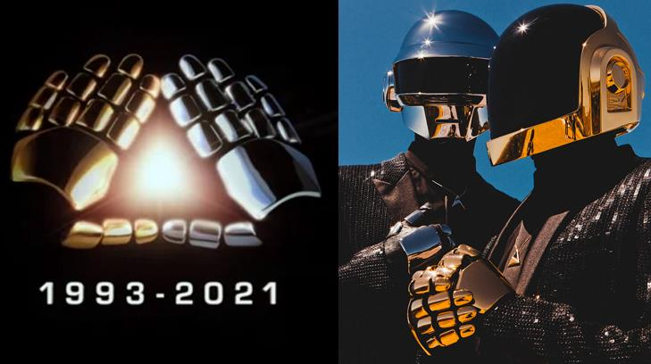

Daft Punk

BIOGRAFIA
Daft Punk fue un dúo francés de música electrónica formado en 1993 en París por Thomas Bangalter y Guy-Manuel de Homem-Christo.
Alcanzaron popularidad a fines de la década de 1990 como parte del movimiento house francés, combinando elementos de la música house con funk, disco, rock y pop.

Bangalter y Homem-Christo formaron Daft Punk después de que su banda de indie rock Darlin' se disolviera y comenzaran a experimentar con cajas de ritmos y sintetizadores. Su álbum de estudio debut, Homework, fue lanzado por Virgin Records en 1997 con críticas positivas, respaldado por los sencillos «Around the World» y «Da Funk». A partir de 1999, Daft Punk asumió personajes de robots para apariciones públicas, con cascos, atuendos y guantes para disfrazar sus identidades; hicieron pocas apariciones en los medios. Fueron administrados desde 1996 hasta 2008 por Pedro Winter, director de Ed Banger Records.
El segundo álbum de Daft Punk, Discovery (2001), tuvo más éxito, con los exitosos sencillos «One More Time», «Digital Love» y «Harder, Better, Faster, Stronger». Se convirtió en la base de una película animada, Interstella 5555, supervisada por el artista japonés Leiji Matsumoto. El tercer álbum, Human After All (2005), recibió críticas mixtas, aunque los sencillos «Robot Rock» y «Technologic» alcanzaron el éxito en el Reino Unido. Daft Punk dirigió una película de ciencia ficción de vanguardia, Electroma, estrenada en 2006. Estuvieron de gira durante 2006 y 2007 y lanzaron el álbum en vivo Alive 2007, que ganó un premio Grammy al Mejor Álbum de Electrónica/Dance; a la gira se le atribuye la popularización de la música dance en América del Norte. Daft Punk compuso la banda sonora de la película Tron: Legacy de 2010.
En 2013, Daft Punk dejó Virgin por Columbia Records y lanzó su cuarto y último álbum, Random Access Memories, con gran éxito; el sencillo principal, «Get Lucky», alcanzó el top 10 en las listas de 27 países. Random Access Memories ganó cinco premios Grammy en 2014, incluidos Álbum del año y Grabación del año por «Get Lucky». En 2016, Daft Punk obtuvo su único número uno en el Billboard Hot 100 con «Starboy», una colaboración con The Weeknd. En 2015, Rolling Stone los clasificó como el duodécimo mejor dúo musical de todos los tiempos. Anunciaron su separación en el 2021.